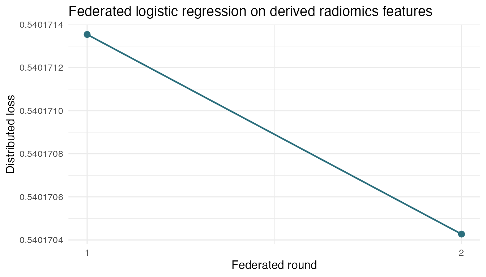

Radiomics To Federated Learning
radiomics-to-flower.Rmd
knitr::opts_chunk$set(collapse = TRUE, comment = "#>")
live <- identical(tolower(Sys.getenv("DSFLOWER_RENDER_LIVE_VIGNETTES")), "true")
`%||%` <- function(x, y) {
if (is.null(x) || length(x) == 0 || (length(x) == 1 && is.na(x))) y else x
}
cat("Live Opal/DataSHIELD execution:", live, "\n")## Live Opal/DataSHIELD execution: FALSEThis vignette shows the downstream handoff from
dsImaging to dsFlowerClient. The imaging
package owns CT segmentation and radiomics extraction. Once each server
has a derived radiomics table, dsFlowerClient trains on
those server-side tables without pulling row-level features back to the
researcher.
For a self-contained render, this page builds a deterministic LUNG1-style radiomics table with the same shape as a derived imaging asset, trains a centralized reference model, partitions the training rows across three Opal servers, uploads the per-site feature tables, and runs federated logistic regression through DataSHIELD and Flower.
1. Configure The Three DataSHIELD Nodes
opal_urls <- trimws(strsplit(Sys.getenv(
"DSFLOWER_OPAL_URLS",
"https://localhost:8443,https://localhost:8444,https://localhost:8445"
), ",", fixed = TRUE)[[1]])
opal_user <- Sys.getenv("OPAL_USER", "administrator")
opal_password <- Sys.getenv("OPAL_PASSWORD", "admin123")
opal_project <- Sys.getenv("DSFLOWER_DEMO_PROJECT", "dsflower_demo")
table_prefix <- paste0("vignette_radiomics_handoff_", format(Sys.time(), "%Y%m%d%H%M%S"))
data.frame(
node = paste0("opal", seq_along(opal_urls)),
url = opal_urls,
project = opal_project,
upload_prefix = table_prefix
)
#> node url project
#> 1 opal1 https://localhost:8443 dsflower_demo
#> 2 opal2 https://localhost:8444 dsflower_demo
#> 3 opal3 https://localhost:8445 dsflower_demo
#> upload_prefix
#> 1 vignette_radiomics_handoff_20260602201928
#> 2 vignette_radiomics_handoff_20260602201928
#> 3 vignette_radiomics_handoff_202606022019282. Build Or Load A Derived Radiomics Table
make_lung1_style <- function(n = 420L, seed = 20260513L) {
set.seed(seed)
stage <- sample(1:4, n, replace = TRUE, prob = c(0.22, 0.28, 0.34, 0.16))
age <- pmin(pmax(round(stats::rnorm(n, 67, 9)), 38), 89)
gender_male <- stats::rbinom(n, 1, 0.57)
tumor_volume <- stats::rlnorm(n, meanlog = 4.2 + 0.28 * stage, sdlog = 0.55)
energy <- log1p(tumor_volume) + stats::rnorm(n, 0, 0.35)
compactness1 <- pmax(stats::rnorm(n, 0.78 - 0.045 * stage, 0.12), 0.05)
glrlm_rlnu <- stats::rlnorm(n, 4.6 + 0.12 * stage, 0.42)
wavelet_hlh_rlnu <- stats::rlnorm(n, 4.2 + 0.18 * stage, 0.48)
firstorder_entropy <- pmax(stats::rnorm(n, 3.1 + 0.12 * stage, 0.45), 0.1)
shape_sphericity <- pmax(pmin(stats::rnorm(n, 0.62 - 0.04 * stage, 0.11), 1), 0.05)
risk <- -5.8 + 0.026 * age + 0.42 * gender_male + 0.52 * stage +
0.30 * energy - 1.20 * compactness1 + 0.0017 * glrlm_rlnu +
0.0021 * wavelet_hlh_rlnu + 0.35 * firstorder_entropy -
0.95 * shape_sphericity
os_2yr_alive <- stats::rbinom(n, 1, 1 - stats::plogis(risk))
data.frame(
id = paste0("lung1_derived_", seq_len(n)),
age = age,
gender_male = gender_male,
stage = stage,
original_firstorder_Energy = energy,
original_shape_Compactness1 = compactness1,
original_glrlm_RunLengthNonUniformity = glrlm_rlnu,
wavelet_HLH_glrlm_RunLengthNonUniformity = wavelet_hlh_rlnu,
original_firstorder_Entropy = firstorder_entropy,
original_shape_Sphericity = shape_sphericity,
os_2yr_alive = os_2yr_alive,
check.names = FALSE
)
}
load_external_radiomics <- function(path, target = Sys.getenv("DSFLOWER_RADIOMICS_TARGET", "os_2yr_alive")) {
if (!nzchar(path) || !file.exists(path)) return(NULL)
ext <- tolower(tools::file_ext(path))
data <- switch(
ext,
rds = readRDS(path),
csv = utils::read.csv(path, check.names = FALSE),
tsv = utils::read.delim(path, check.names = FALSE),
stop("Unsupported radiomics feature file extension: ", ext, call. = FALSE)
)
if (!"id" %in% names(data)) data$id <- paste0("radiomics_", seq_len(nrow(data)))
if (!target %in% names(data)) stop("Missing target column: ", target, call. = FALSE)
names(data)[names(data) == target] <- "os_2yr_alive"
data
}
external_path <- Sys.getenv("DSFLOWER_RADIOMICS_FEATURES", "")
dataset <- load_external_radiomics(external_path)
data_mode <- if (is.null(dataset)) {
dataset <- make_lung1_style()
"deterministic LUNG1-style derived radiomics fixture"
} else {
paste("external derived radiomics table", normalizePath(external_path))
}
features <- c(
"original_firstorder_Energy",
"original_shape_Compactness1",
"original_glrlm_RunLengthNonUniformity",
"wavelet_HLH_glrlm_RunLengthNonUniformity",
"age",
"gender_male"
)
missing_features <- setdiff(features, names(dataset))
if (length(missing_features)) {
stop("Missing radiomics feature columns: ", paste(missing_features, collapse = ", "),
call. = FALSE)
}
cat("[data] mode:", data_mode, "\n")
#> [data] mode: deterministic LUNG1-style derived radiomics fixture
data.frame(
rows = nrow(dataset),
selected_features = length(features),
alive_2yr = sum(dataset$os_2yr_alive == 1L),
dead_by_2yr = sum(dataset$os_2yr_alive == 0L)
)
#> rows selected_features alive_2yr dead_by_2yr
#> 1 420 6 279 1413. Train The Centralized Reference Model
rank_auc <- function(y, p) {
ok <- is.finite(p) & !is.na(y)
y <- as.integer(y[ok])
p <- as.numeric(p[ok])
if (length(unique(y)) < 2L) return(NA_real_)
n_pos <- sum(y == 1L)
n_neg <- sum(y == 0L)
ranks <- rank(p, ties.method = "average")
(sum(ranks[y == 1L]) - n_pos * (n_pos + 1) / 2) / (n_pos * n_neg)
}
binary_metrics <- function(y, p, eps = 1e-15) {
p <- pmin(pmax(as.numeric(p), eps), 1 - eps)
y <- as.integer(y)
list(
auc = unname(rank_auc(y, p)),
accuracy = unname(mean(as.integer(p >= 0.5) == y)),
log_loss = unname(-mean(y * log(p) + (1 - y) * log(1 - p))),
brier = unname(mean((p - y)^2))
)
}
set.seed(20260513)
test_idx <- integer()
for (cls in sort(unique(dataset$os_2yr_alive))) {
idx <- sample(which(dataset$os_2yr_alive == cls))
test_idx <- c(test_idx, idx[seq_len(max(1L, floor(length(idx) * 0.25)))])
}
train <- dataset[setdiff(seq_len(nrow(dataset)), test_idx), , drop = FALSE]
test <- dataset[test_idx, , drop = FALSE]
centers <- vapply(train[features], mean, numeric(1), na.rm = TRUE)
scales <- vapply(train[features], stats::sd, numeric(1), na.rm = TRUE)
scales[!is.finite(scales) | scales == 0] <- 1
for (feature in features) {
train[[feature]] <- (as.numeric(train[[feature]]) - centers[[feature]]) / scales[[feature]]
test[[feature]] <- (as.numeric(test[[feature]]) - centers[[feature]]) / scales[[feature]]
}
central_model <- stats::glm(
os_2yr_alive ~ .,
data = data.frame(os_2yr_alive = train$os_2yr_alive, train[features], check.names = FALSE),
family = stats::binomial(),
control = stats::glm.control(maxit = 100)
)
central_probs <- as.numeric(stats::predict(
central_model,
newdata = data.frame(test[features], check.names = FALSE),
type = "response"
))
central_metrics <- binary_metrics(test$os_2yr_alive, central_probs)
cat("[centralized] rows:", nrow(train), "train /", nrow(test), "test\n")
#> [centralized] rows: 316 train / 104 test
cat("[centralized] model: stats::glm(binomial)\n")
#> [centralized] model: stats::glm(binomial)
cat("[centralized] AUC:", sprintf("%.4f", central_metrics$auc), "\n")
#> [centralized] AUC: 0.7375
cat("[centralized] accuracy:", sprintf("%.4f", central_metrics$accuracy), "\n")
#> [centralized] accuracy: 0.7788
data.frame(metric = names(central_metrics), value = unlist(central_metrics), row.names = NULL)
#> metric value
#> 1 auc 0.7374741
#> 2 accuracy 0.7788462
#> 3 log_loss 0.5520869
#> 4 brier 0.17980084. Partition The Training Rows Across Sites
make_site_labels <- function(y, n_sites, seed = 20260513L) {
set.seed(seed)
labels <- rep(NA_integer_, length(y))
for (cls in sort(unique(y))) {
idx <- sample(which(y == cls))
labels[idx] <- rep(seq_len(n_sites), length.out = length(idx))
}
labels
}
n_sites <- length(opal_urls)
train$site <- make_site_labels(train$os_2yr_alive, n_sites)
site_tables <- split(train, train$site)
site_tables <- lapply(site_tables, function(x) {
x$site <- NULL
x
})
do.call(rbind, lapply(seq_along(site_tables), function(i) {
data.frame(
site = paste0("opal", i),
rows = nrow(site_tables[[i]]),
alive_2yr = sum(site_tables[[i]]$os_2yr_alive == 1L),
dead_by_2yr = sum(site_tables[[i]]$os_2yr_alive == 0L)
)
}))
#> site rows alive_2yr dead_by_2yr
#> 1 opal1 106 70 36
#> 2 opal2 105 70 35
#> 3 opal3 105 70 355. Upload Tables, Run dsFlower, And Show Flower Output
predict_sklearn_logreg_weights <- function(weights, x) {
coef_raw <- weights[[1L]]
intercept_raw <- weights[[2L]]
if (is.list(coef_raw) && length(coef_raw) == 1L) coef_raw <- coef_raw[[1L]]
if (is.list(intercept_raw) && length(intercept_raw) == 1L) intercept_raw <- intercept_raw[[1L]]
p <- ncol(x)
flat <- as.numeric(coef_raw)
coef <- if (length(flat) == p) flat else matrix(flat, ncol = p, byrow = TRUE)[1L, ]
score <- as.matrix(x) %*% coef + as.numeric(intercept_raw)[1L]
as.numeric(1 / (1 + exp(-score)))
}
fallback_path <- c(
file.path("..", "inst", "extdata", "dsflower_demo_benchmark_results.json"),
file.path("inst", "extdata", "dsflower_demo_benchmark_results.json"),
system.file("extdata", "dsflower_demo_benchmark_results.json", package = "dsFlowerClient")
)
fallback_path <- fallback_path[nzchar(fallback_path) & file.exists(fallback_path)][1]
fallback <- jsonlite::fromJSON(fallback_path, simplifyVector = FALSE)$results$lung1_radiomics
if (live) {
suppressPackageStartupMessages({
library(DSI)
library(DSOpal)
library(dsFlowerClient)
library(opalr)
})
table_paths <- character(n_sites)
for (i in seq_len(n_sites)) {
opal <- opalr::opal.login(username = opal_user, password = opal_password,
url = opal_urls[[i]],
opts = list(ssl_verifyhost = 0L, ssl_verifypeer = 0L))
if (!opalr::opal.project_exists(opal, opal_project)) {
opalr::opal.project_create(opal, opal_project, database = "mongodb")
}
opalr::dsadmin.set_option(opal, "dsflower.privacy_profile",
"trusted_internal", profile = "default")
table_name <- paste0(table_prefix, "_site", i)
opalr::opal.table_save(opal, site_tables[[i]], project = opal_project,
table = table_name, id.name = "id",
policy = "generate", overwrite = TRUE, force = TRUE)
table_paths[[i]] <- paste(opal_project, table_name, sep = ".")
opalr::opal.logout(opal)
cat("[upload]", opal_urls[[i]], "->", table_paths[[i]], "\n")
}
builder <- DSI::newDSLoginBuilder()
for (i in seq_len(n_sites)) {
builder$append(server = paste0("opal", i), url = opal_urls[[i]],
user = opal_user, password = opal_password,
table = table_paths[[i]], driver = "OpalDriver")
}
conns <- DSI::datashield.login(builder$build(), assign = TRUE, symbol = "D")
cat("[DataSHIELD] connected nodes:", length(conns), "\n")
fit <- ds.flower.fit(
conns, symbol = "D", target = "os_2yr_alive", features = features,
model = "sklearn_logreg", model_params = list(max_iter = 100L),
strategy = "fedavg", privacy = "trusted_internal", rounds = 2L
)
post_caps <- tryCatch(
DSI::datashield.aggregate(conns, expr = call("flowerGetCapabilitiesDS")),
error = function(e) {
cat("[cleanup] capability check unavailable:", conditionMessage(e), "\n")
NULL
}
)
DSI::datashield.logout(conns)
federated_metrics <- binary_metrics(
test$os_2yr_alive,
predict_sklearn_logreg_weights(fit$weights, test[features])
)
history <- fit$history
output_dir <- fit$output_dir
} else {
table_paths <- paste0(opal_project, ".", table_prefix, "_site", seq_len(n_sites))
federated_metrics <- fallback$federated_metrics
history <- do.call(rbind, lapply(fallback$history, as.data.frame))
output_dir <- fallback$flower_output_dir
post_caps <- replicate(n_sites, list(active_supernodes = 0L), simplify = FALSE)
cat("[non-live render] using committed output from the last live equivalent run\n")
}
#> [non-live render] using committed output from the last live equivalent run
cat("[dsFlower] output_dir:", output_dir, "\n")
#> [dsFlower] output_dir: ./dsflower_output/sklearn_logreg_FedAvg_2r_20260512_162114
print(history)
#> round loss n_clients n_failures
#> 1 1 0.5904 3 0
#> 2 2 0.5904 3 06. Compare Centralized vs dsFlower
comparison <- data.frame(
metric = c("auc", "accuracy", "log_loss", "brier"),
centralized = unlist(central_metrics[c("auc", "accuracy", "log_loss", "brier")]),
dsFlower = unlist(federated_metrics[c("auc", "accuracy", "log_loss", "brier")])
)
comparison$delta <- comparison$dsFlower - comparison$centralized
knitr::kable(comparison, digits = 4)| metric | centralized | dsFlower | delta | |
|---|---|---|---|---|
| auc | auc | 0.7375 | 0.7205 | -0.0170 |
| accuracy | accuracy | 0.7788 | 0.6635 | -0.1153 |
| log_loss | log_loss | 0.5521 | 0.6175 | 0.0654 |
| brier | brier | 0.1798 | 0.2135 | 0.0337 |
failure_count <- if ("n_failures" %in% names(history)) {
sum(as.integer(history$n_failures), na.rm = TRUE)
} else {
0L
}
active_supernodes <- if (is.null(post_caps)) integer() else {
vapply(post_caps, function(x) as.integer(x$active_supernodes %||% 0L), integer(1))
}
cat("[acceptance] Flower client failures:", failure_count, "\n")
#> [acceptance] Flower client failures: 0
cat("[acceptance] active SuperNodes after cleanup:",
if (length(active_supernodes)) paste(active_supernodes, collapse = ", ") else "not available", "\n")
#> [acceptance] active SuperNodes after cleanup: 0, 0, 0
cat("[acceptance] PASS:",
failure_count == 0L && (length(active_supernodes) == 0L || all(active_supernodes == 0L)), "\n")
#> [acceptance] PASS: TRUE
loss <- data.frame(
round = seq_len(nrow(history)),
loss = as.numeric(history$loss),
n_failures = if ("n_failures" %in% names(history)) as.numeric(history$n_failures) else 0
)
if (requireNamespace("ggplot2", quietly = TRUE)) {
ggplot2::ggplot(loss, ggplot2::aes(x = round, y = loss)) +
ggplot2::geom_line(color = "#2c6f7d", linewidth = 0.8) +
ggplot2::geom_point(color = "#2c6f7d", size = 2.6) +
ggplot2::scale_x_continuous(breaks = loss$round) +
ggplot2::labs(
x = "Federated round",
y = "Distributed loss",
title = "Federated logistic regression on derived radiomics features"
) +
ggplot2::theme_minimal(base_size = 12)
} else {
plot(loss$round, loss$loss, type = "b",
xlab = "Federated round", ylab = "Distributed loss",
main = "Radiomics to dsFlower loss")
}